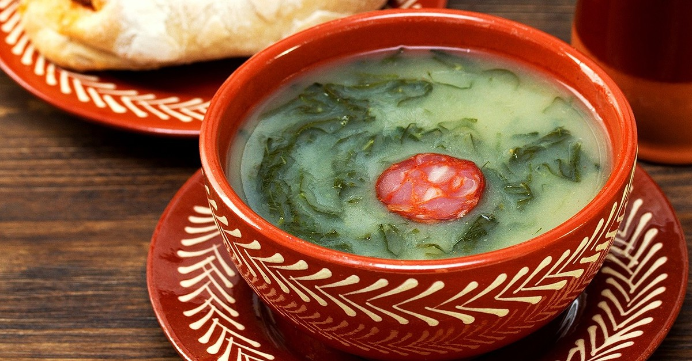

As Boas das Sopas

Caldo Verde
Tradicional sopa portuguesa com couve, batata e chouriço. Um clássico reconfortante.
45 min
6 porções
Sopa de Legumes
Sopa nutritiva com mix de legumes frescos da estação e ervas aromáticas.
30 min
4 porções
Creme de Abóbora
Delicioso creme de abóbora com um toque de gengibre e finalizado com sementes tostadas.
35 min
4 porções